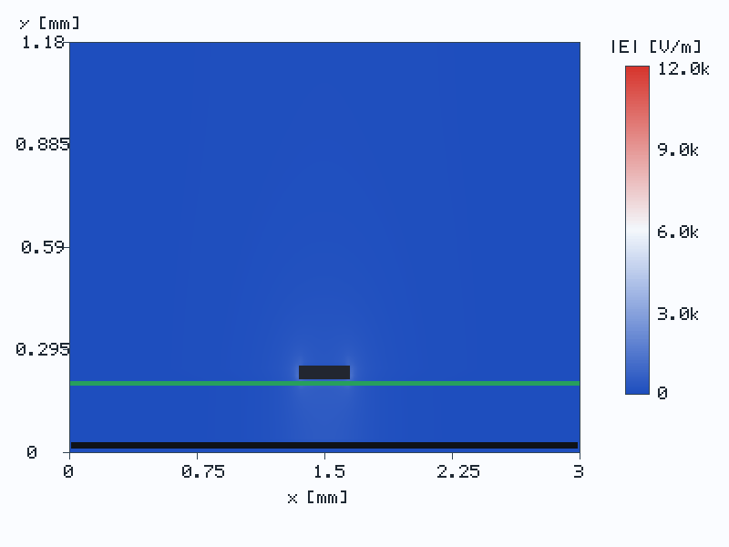
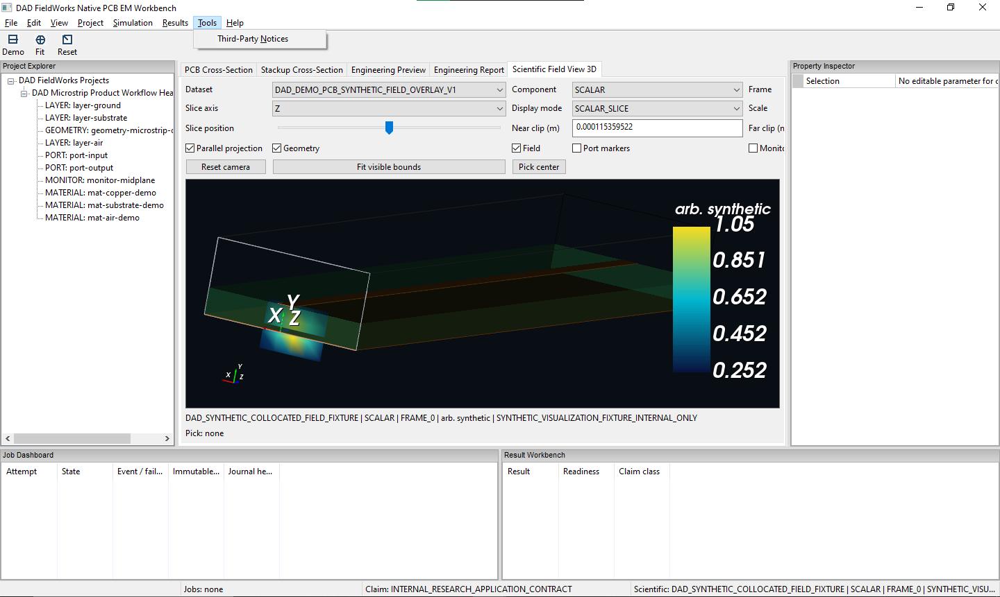
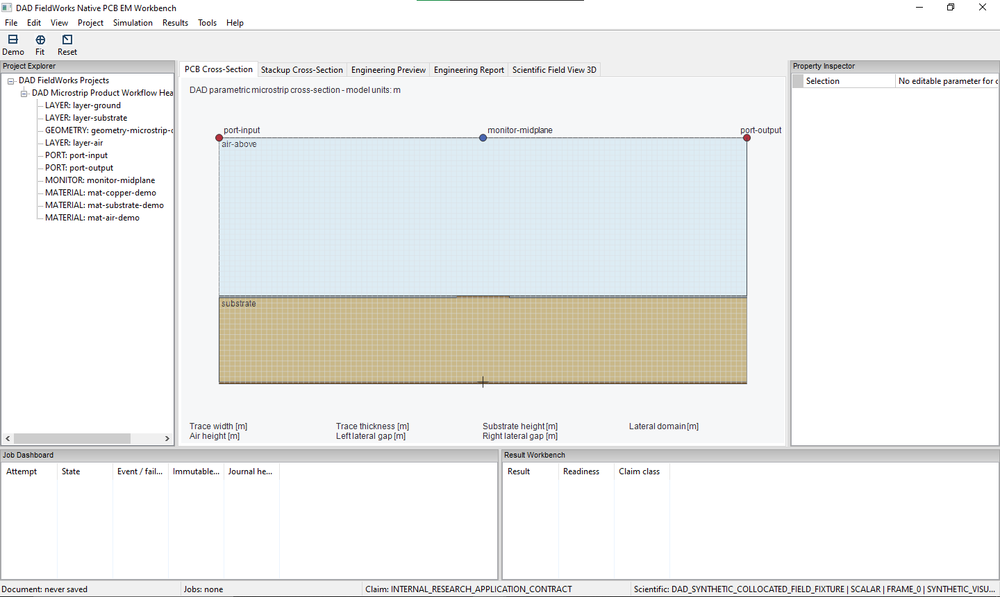
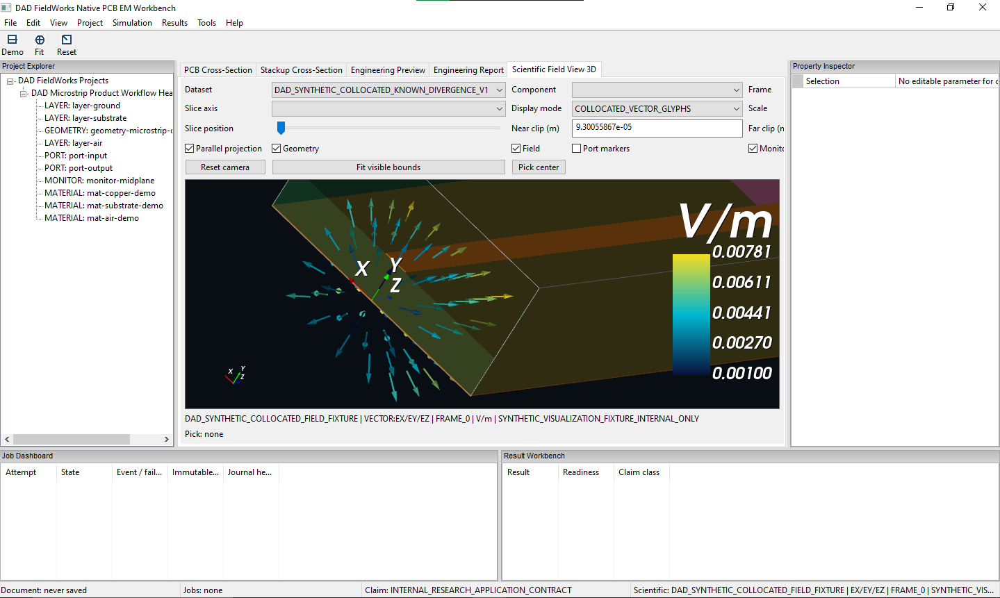
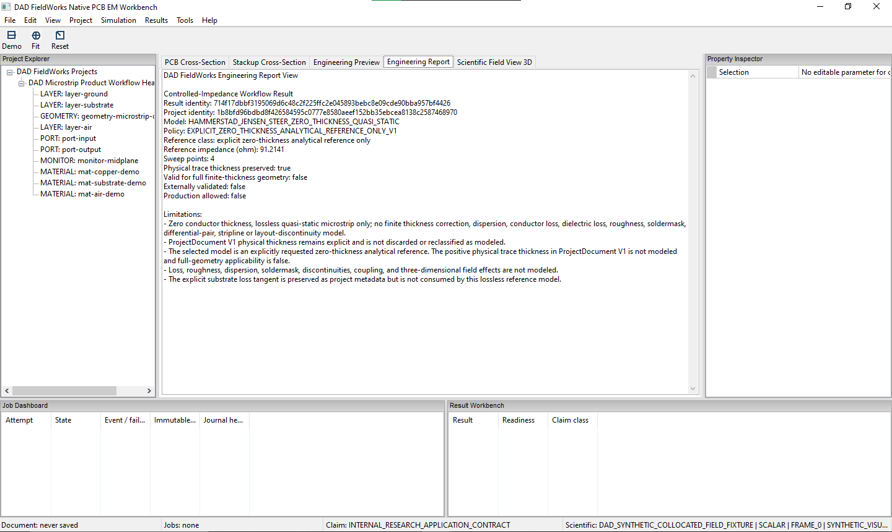

{kind=link}
{kind=link}
{kind=link}
{kind=link}
Computational Electromagnetics
Numerical field, mode and residual driven workflows.
Evidence controlled engineering software
DAD FieldWorks develops evidence controlled engineering software for computational electromagnetics, RF design and signal integrity.
It combines analytical reference kernels, numerical diagnostics and claim aware evidence records so engineering results remain traceable before they are trusted.
No external validation claim. No production readiness claim.

What DAD FieldWorks builds
DAD FieldWorks is being developed as a software platform for engineering workflows where computed results are not treated as trustworthy merely because they look plausible or produce a number. Results are accompanied by evidence records, source boundaries, reproducibility metadata and claim limits.
Native engineering workbench
DAD FieldWorks is being developed as an independent native C++ engineering workbench for PCB-oriented computational electromagnetics, RF engineering and signal integrity.
The current Windows prototype combines a wxWidgets desktop workbench with embedded VTK scientific 3D visualization, a DAD-owned parametric PCB cross-section, synthetic scalar and vector field fixtures, and claim-aware engineering reporting.
Independent R&D prototype · Synthetic visualization fixtures




Development preview. The screenshots show synthetic visualization fixtures and analytical reference reporting. Physical solver-field binding, complete real S-parameter workflows, interactive PCB model authoring, external validation and production readiness remain under development.
Technology areas
Numerical field, mode and residual driven workflows.
Resonator, cavity and wave structure diagnostics.
Analytical reference kernels for impedance, width synthesis and coupled line derived quantities.
Result records, trust states, reproducibility metadata and claim boundaries.
Evidence model
A DAD FieldWorks result remains bounded until evidence records define what it may claim.
Current public state
Roadmap
Native engineering workbench, analytical reference workflows and public-safe synthetic scientific visualization previews.
Physical solver-result binding, RF result visualization and interactive PCB model-authoring foundations under explicit evidence and claim gates.
Evidence-controlled PCB electromagnetic simulation and RF engineering workflows, with external validation only when measurements, analytical references or alternative-code comparisons support it.
About
DAD FieldWorks is developed by Harun Aktas as an independent engineering software initiative. The project combines software development, computational electromagnetics, RF engineering, signal integrity and evidence-controlled engineering workflows
Technical materials